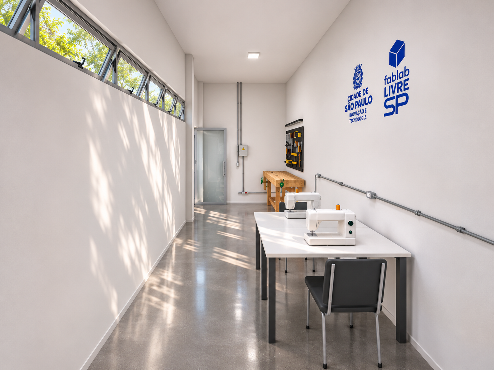
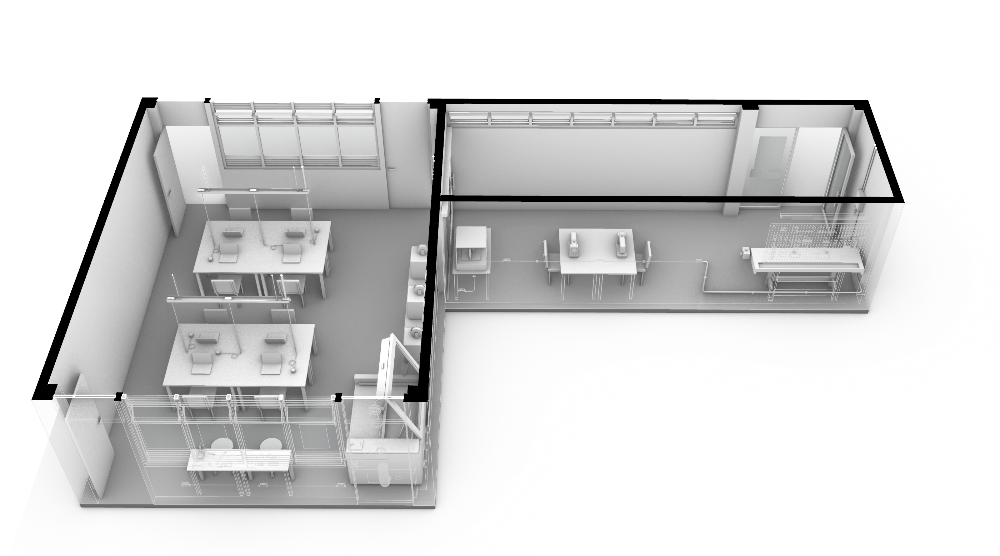
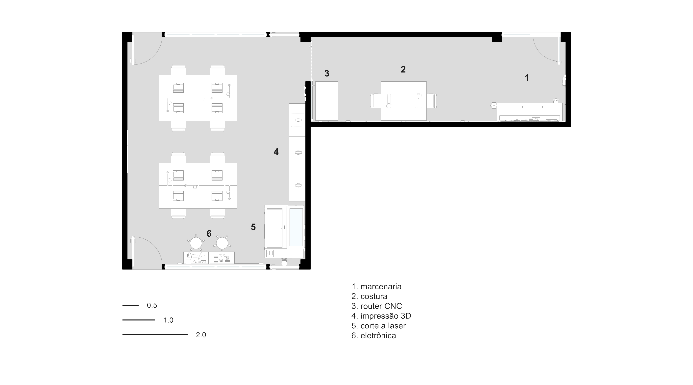
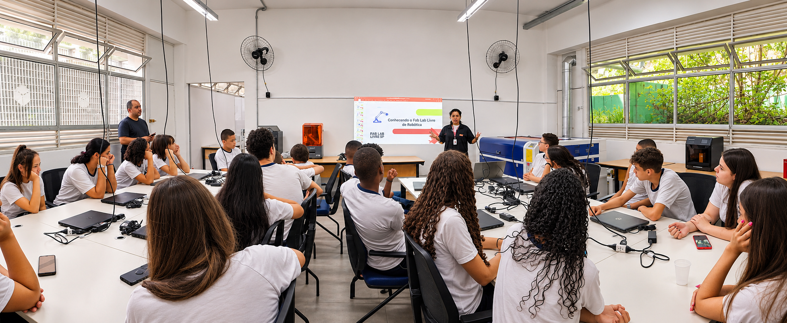
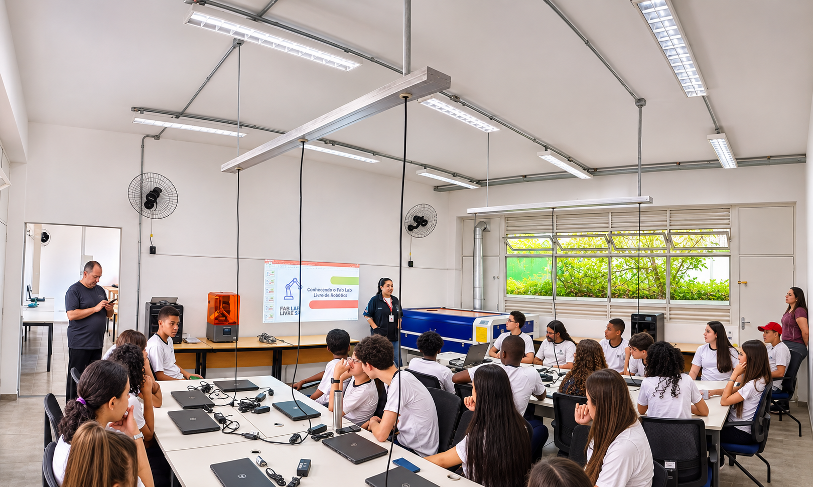
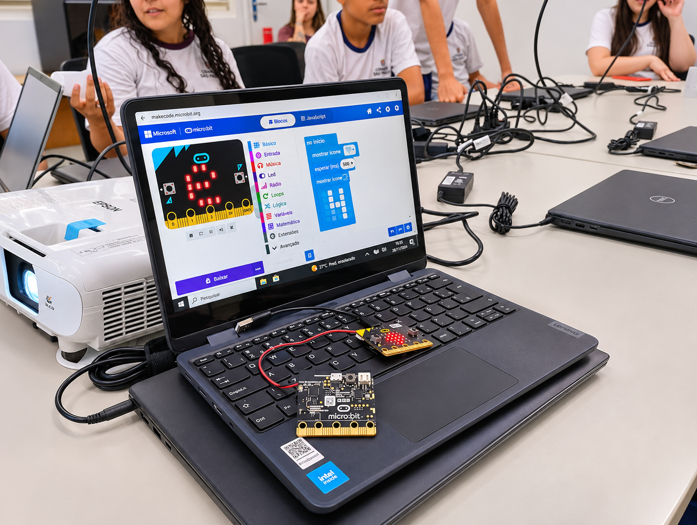

Espaços públicos de inovação







Implantação de novas unidade da rede Fab Lab Livre SP
Projetos de arquitetura para as novas unidades da rede Fab Lab Livre SP inauguradas entre 2024 e 2025. Para os projetos, foi realizado o acompanhamento de obra, análise do cronogramas físico-financeiros e coordenação logística de mobiliários e equipamentos.